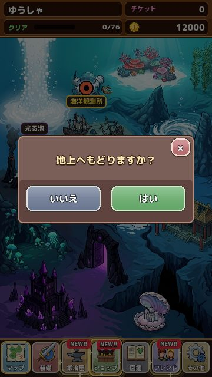

セーブと引き継ぎ
自動で保存されるタイミング、記録が消えてしまう場面、引き継ぎコードと Google アカウントでの引き継ぎ方、機種変更の手順をまとめました。 更新：2026-11-23
記録はいつ保存されるのか
キシドラ！はインストールのいらない、ブラウザで遊ぶゲームです。冒険の記録は、遊んでいるブラウザの中に自動で保存されるので、セーブのボタンを押す必要はありません。保存されるのは、おもに次のような場面です。
- 新しい旅を始めたとき
- STAGE をクリアしたとき、STAGE から離脱したとき
- ガチャを引いたとき、装備を売ったとき
- 強化・進化・素材のまとめ作りをしたとき（鍛冶屋の操作はその場で保存されます）
- 装備や持ち物の並べ方を変えて、画面を閉じたとき
ゲームを開いたとき、記録があればタイトル画面に「つづきから」と「はじめから」が出ます。「はじめから」を選ぶと、指が当たって記録を消してしまわないように確かめの窓が出ます。ふだんは「つづきから」を押せば、最後に保存したところから遊べます。
反対に、STAGE の途中は保存されません。戦いの途中でブラウザを閉じると、その STAGE は始める前の状態にもどります。ただし、とても長い戦いになる蜃気楼のダンジョンだけは、WAVE の始めから毎ターン保存され、入り直すと中断したところから続けられます（蜃気楼のダンジョン）。
BGM と効果音の音量、ガードのタイミングといった「設定」は、冒険の記録とは別に、その端末ごとに保存されます。記録を消しても設定は残り、引き継ぎをしても設定は移りません。新しい端末では、設定だけはもう一度合わせてください。

記録が消えてしまう場面
記録はブラウザの中にあるので、ブラウザのほうの操作で消えてしまうことがあります。次の場面には気をつけてください。
- ブラウザの「履歴とサイトデータを消去」：ゲームの記録も一緒に消えます
- プライベートブラウズ（シークレットモード）：タブを閉じると記録が残りません。ふだんのタブで遊びましょう
- 長い間遊ばない：iPhone の Safari では、しばらく開かなかったサイトのデータが消されることがあります
- ブラウザや開き方を変えた：Safari と Chrome、パソコンとスマホでは記録は別々です。ホーム画面に追加したアイコンから開いたときと、ブラウザから開いたときで記録が分かれることもあります
「記録がなくなった！」と思ったときは、まず、いつもと同じブラウザ・同じ開き方で開いているかを確かめてください。どの場合でも、下の引き継ぎコードか Google アカウントの連携をしておけば、記録を取り戻せます。
引き継ぎコードの発行
引き継ぎコードは、今の記録をまるごと文字の列にしたものです。地図の下の欄の「その他」から「引き継ぎ」を開き、「コードを発行する」を押すと作れます。タイトル画面の「引き継ぎ」からも同じ画面を開けます。
コードには、コイン・クリアした STAGE・装備・持ち物・名前・図鑑・素材・道具・チケット・難易度・討伐の記録など、冒険の記録のすべてが入ります。サーバーを使わずに記録そのものを文字にしているので、コードはとても長く、持ち物が 50 個でおよそ 2,400 字、300 個でおよそ 6,800 字、999 個ではおよそ 17,800 字になります。画面には「コード（○○ 字）」と長さが出るので、「コードを見る・コピーする」で全部をコピーし、メモのアプリや自分あてのメッセージに貼って取っておきましょう。コードは「KSD1.」で始まります。
大事な注意がふたつあります。ひとつは、コードは発行したときの記録の写しだということです。発行したあとに進めた分は入っていないので、機種を変える直前にもう一度発行してください。もうひとつは、コードを知っている人はだれでもあなたの記録で遊べてしまうので、ほかの人に教えないことです。

引き継ぎコードで再開する
新しい端末やブラウザでゲームを開き、タイトル画面か「その他」の「引き継ぎ」から「引き継ぎコードで再開」の「コードを貼り付ける」を押して、取っておいたコードを貼り付けます。読みこめると、「この記録で再開する？」という確かめの窓に、名前・クリアした数・コイン・持ち物の数・チケットの数が出るので、自分の記録かどうか確かめてから「再開する」を押してください。
その端末にすでに記録があるときは、今の記録は、貼り付けた記録に置きかわります。うまくいかないときは、出てくる言葉で原因が分かります。
| 出てくる言葉 | 原因と直し方 |
|---|---|
| 引き継ぎコードではないみたい | ちがう文章を貼っています。「KSD1.」で始まるコードを全部貼り付けます |
| コードが途中で切れているか、まちがっているみたい | コピーのときに一部が切れています。メモから最後まで選んでコピーし直します |
| 新しいバージョンのゲームで作ったコード | 貼り付けた側のゲームが古いバージョンです。ゲームを新しくしてから貼り付けます |
メッセージのアプリに貼ると途中で改行されることがありますが、空白と改行は読むときに無視されるので、そのまま貼り付けて大丈夫です。
Google アカウントで預ける
引き継ぎの画面のいちばん上の「Google でログインして連携」を使うと、記録をサーバーにも預けておけます。預けた記録は STAGE をクリアするたびに新しくなるので、引き継ぎコードのように「発行し直す」手間がありません。ブラウザのデータが消えてしまっても、新しい端末で「Google でログインして取り戻す」を押し、前と同じ Google アカウントでログインすれば、預けた記録で続きから遊べます（このときも、その端末の今の記録は取り戻した記録に置きかわります）。
連携で使うのは Google アカウントの番号だけで、メールアドレスや名前は受け取りません。連携はあとから解除することもできます。くわしくは プライバシーポリシー をご覧ください。

データの初期化と、最新のバージョン
最初から遊び直したいときは、「その他」の「設定」のいちばん下にある「データの初期化」を使います。間違えて消さないように、「データを初期化する？」「本当に消していい？」「これが最後の確認」と 3 回確かめてから消えるようになっています。初期化すると冒険の記録は全部消えてタイトル画面にもどり、元にはもどせません（設定は残ります）。迷ったら、先に引き継ぎコードを発行して取っておきましょう。
同じ設定の画面には、今遊んでいるゲームのバージョン（作った日時）も出ます。新しいバージョンが出たのに画面が前のままのときは、「最新バージョンにする」でゲームを読み直せます。このとき記録と設定は消えません。
機種変更の手順
- 前の端末で STAGE をひとつクリアして、記録を最新にする
- 「その他」→「引き継ぎ」で、引き継ぎコードを発行してコピーし、メモに貼って取っておく（Google と連携している人は、連携できているかも確かめる）
- 新しい端末で、これから遊ぶ開き方を決める。iPhone の Safari なら共有ボタンの「ホーム画面に追加」、Android の Chrome ならメニューの「ホーム画面に追加」でアイコンを作っておくと、アプリのようにすぐ開けます
- その開き方（ホーム画面のアイコンなど）でゲームを開き、タイトル画面の「引き継ぎ」からコードを貼り付ける（または Google でログインして取り戻す）
- 名前・クリアした数・コインが前と同じか確かめてから「再開する」
- 設定（音量・ガードのタイミング）を合わせ直す
よくある質問
- パソコンとスマホで同じ記録を続けて遊べる？：記録は端末ごとに別々で、自動ではそろいません。引き継ぎコードで移したあとは、前の端末の記録と新しい端末の記録がそれぞれ別に進みます。行き来したいときは、遊ぶ端末を変えるたびにコードを発行して貼り付け直してください
- 前の端末の記録は消える？：引き継いでも、前の端末の記録はそのまま残ります。いらなくなったら、前の端末で「データの初期化」をしておくと、まちがえてそちらで遊んでしまうことを防げます
- コードをなくしてしまった：前の端末がまだ使えるなら、もう一度発行できます。端末もコードもないときは、Google と連携していれば取り戻せます